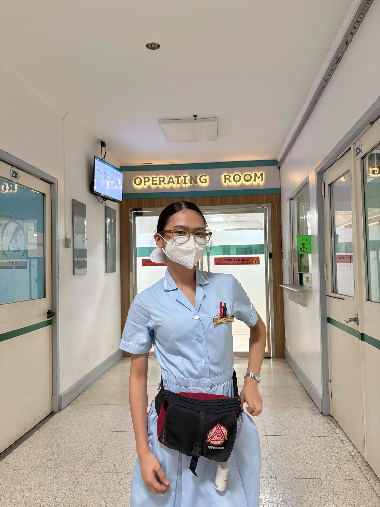
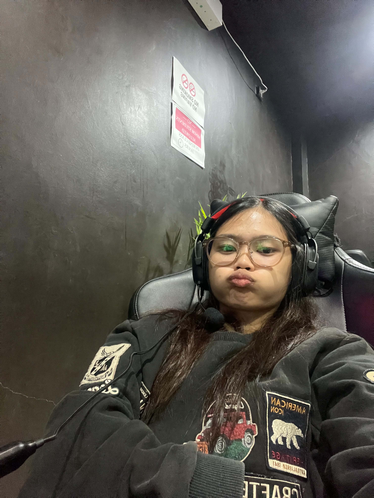
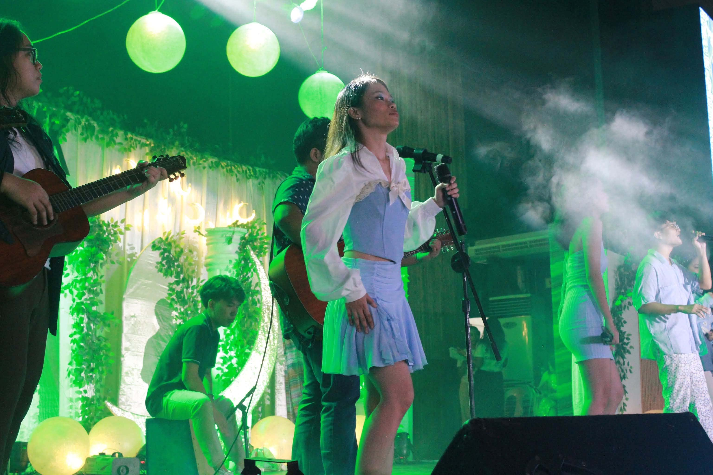
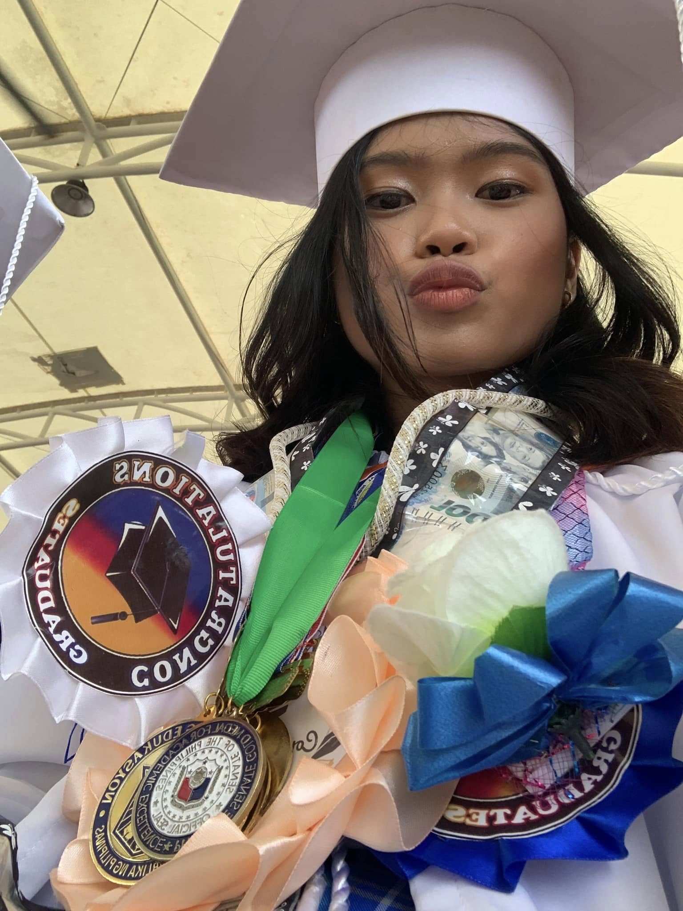
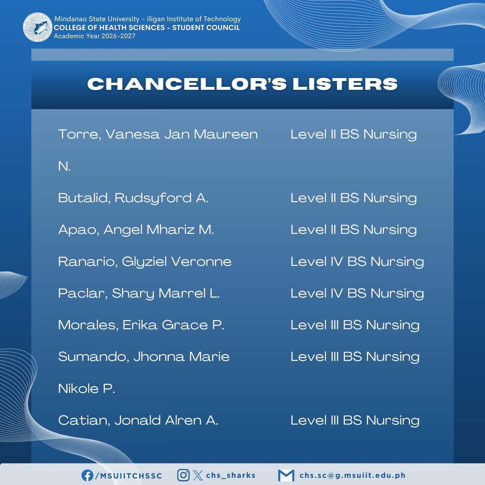

×

1 / 1
Card Title
Detailed description goes here.
Overview of stats, main class, current quest line, and active traits.

Balancing clinicals, lectures, and healthcare mastery. 📸 (Click for 3 photos)

High affinity for RPGs, shooter games, and anime binging. 📸 (Click for 5 photos)

Enjoys pickleball, running, singing, dancing, and sunset hunting. 📸 (Click for 8 photos)
San Francisco SPED Learning Center
Agusan del Sur National High School

Maintained high academic standing from 1st Year through 3rd Year, 2nd Semester.

Passed the prestigious DOST-SEI Scholarship exam! However, life took a different turn—because I chose to pursue Nursing, I had to forfeit the scholarship since nursing isn't under the DOST-covered STEM programs. No regrets, though!
During my younger years, I was super active in student organizations and leadership. But by Senior High School, the constant hustle led to serious burnout.
Entering college, I decided to lay low on executive roles and focus on my peace. Now, I enjoy a healthy balance—soaking in free time, making core memories, and having fun with my friends and classmates.
Detailed description goes here.